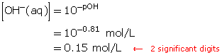
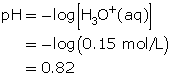
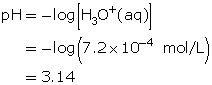

Module 5—Acids and Bases
Module Introduction
Recall from previous science courses that acids taste sour. The sour “kick” of many foods people eat is due to acids—often listed as ingredients. You may also recall your teacher cautioning you in the laboratory that acids can damage your skin. Knowing this, have you ever wondered why some acids can be used in foods? Does the concentration of an acid influence its properties? Do other factors influence the observable characteristics of acids? How can two acidic solutions with equal solute concentrations have different pH values?
In this module you will learn the answers to these questions and explore several aspects of acid-base chemistry.
In Lesson 2, there are theories, like Arrhenius’s theory, that attempt to explain and predict the behaviour of acidic and basic substances when they are dissolved in an aqueous solution. However, you may have found situations where this theory was not adequate when explaining and predicting your observations of the behaviour of an acid or base. In this module you will learn why and in what way the Arrhenius theory had to be modified to overcome these limitations.
- Scientific theories are human inventions used to explain events that occur in nature and predict future results. While learning acid-base chemistry, you will pay more attention to different theories. What are the limitations of the different theories you will use?
- How do significant digits communicate the appropriate information about acidic and basic solutions?
 Big Picture
Big Picture

© Image courtesy of Canstockphoto.com
Opening the door of a refrigerator not only reveals many food options, but it also reveals a world of chemistry. In Module 4 you encountered some refrigerator chemistry with the study of gas solubility in soda pop and salt solubility in pickle juice. There is much more chemistry happening in your fridge than just solubility!
Foods, in particular, can be studied in the context of acid-base chemistry, since nearly every item in your fridge contains acidic or basic molecules. An understanding of acid-base chemistry is an essential component of food science.
In this module you will study the experimental and theoretical foundations of acid-base chemistry and learn about how some common food items can be used to demonstrate these principles.
In This Module
Lesson 1: Properties of Acids and Bases
Acids and bases had been used for centuries long before any theoretical understanding for their behaviour. In this lesson you will briefly review concepts related to acids and bases introduced in Science 10. Once you complete this review, you will learn about Arrhenius’s theory, its limitations in explaining and predicting the behaviour of acids and bases, and about a new particle called the hydronium ion.
- What are the empirical properties of acids and bases?
- How are acids and bases named?
- Why is the original Arrhenius theory considered to be an incomplete explanation of the behaviour of acids and bases?
Lesson 2: Calculating pH and pOH
The concentration of acidic or basic particles within a chemical system can be expressed using a number other than molar concentration. What mathematical formulas are required to calculate these values? In this lesson you will learn how to associate pH and pOH with the acidity or basicity of a solution and gain an understanding of the relative concentrations of hydronium and hydroxide ions within a solution.
- How do you calculate pH, [H3O+(aq)], pOH, and [OH–(aq)]?
Lesson 3: Strength of Acids and Bases
Equal concentrations of ethanoic acid, commonly called vinegar, and hydrochloric acid will not have the same pH. Why? How do weak acids and bases differ from strong acids and bases? How can any differences be explained using the theories that have been introduced throughout this unit?
- How are the empirical properties of weak acids and bases different from those of strong acids and bases?
- What are polyprotic acids and bases?
Lesson 4: Multi-step pH and pOH Calculations
In this lesson you will apply the formulas introduced in Lesson 3 to help you address a variety of practical applications, including
- preparing a solution with a specific pH
- predicting the pH of a solution using the mass of solute
- predicting the pH of a solution produced by the dilution of another solution
- How are ionization and dissociation accounted for when calculating concentration of acidic and basic particles within a solution?
- How can a solution’s pH be predicted using mass of solute and solution volume?
- Why is the pH of a diluted solution able to be predicted?
Lesson 5: Indicators
pH can be estimated using acid-base indicators. Indicators are molecules that have distinct colours at various pH values. In this lesson you will learn how to use indicator colour to estimate the pH of a solution. You will also complete a virtual lab that demonstrates how to use indicators.
 Module Assessment
Module Assessment
The assessment in this module consists of the following:
- Module 5: Lesson 1 Assignment
- Module 5: Lesson 2 Assignment
- Module 5: Lesson 3 Assignment
- Module 5: Lesson 4 Assignment
- Module 5: Lesson 5 Assignment
Lesson 1—Properties of Acids and Bases
 Get Focused
Get Focused
It’s a long weekend in the summer. You and your family decide to enjoy the weather by going on a camping trip.
Upon returning home, you find that your refrigerator has malfunctioned and most of the food inside has spoiled. There is a strong, rancid odour; and it persists even after all of the food has been removed.
After a brief Internet search, you come across a website that recommends using baking soda to remove the odour from your fridge. So, you and your family try this method. A few hours after you leave an open box of baking soda in the fridge, the intensity of the odour is noticeably less.
Why can baking soda reduce the intensity of an odour in a refrigerator? How are principles of acid-base reactions demonstrated in this and in many other chemical reactions?
Essential Questions
-
What are the empirical properties of acids and bases?
-
How are acids and bases named?
-
Why is Arrhenius's original theory considered to be an incomplete explanation of the behaviour of acids and bases?
Module 5: Lesson 1 Assignment
You will complete the Module 5 Assignment 1 in this lesson.
Remember that the questions that are not marked by the teacher provide you with the practice and feedback that you need to successfully complete this course. You should respond to all the questions and place those answers in your course folder.
 Explore
Explore  Try This
Try This
An Acid-Base Reaction
What do you understand about acids and bases? In previous science courses you may have investigated their properties, but how do they behave when they are combined? In this activity you will examine the reaction of baking soda (sodium hydrogen carbonate) with vinegar (an aqueous solution of ethanoic acid). Follow these steps:
Step 1: Write the chemical formulas, including their states, for solid sodium hydrogen carbonate and aqueous ethanoic acid.
Step 2: Place 50 mL of vinegar into a 100-mL beaker or drinking glass.
Step 3: Add 5 mL (1 teaspoon) of baking soda to the beaker containing the vinegar.
Step 4: Observe any changes that occur.
TR 1. A group of Chemistry 20 students suggests that the balanced chemical equation for the reaction between baking soda and vinegar is
NaHCO3(s) + CH3COOH(aq) → NaCH3COO(aq) + CO2(g) + H2O(l)
Use your observations to support or argue against the suggested equation. Identify any additional tests you might want to perform to support your answer.
Check your work.
Try This Answer
TR 1. The proposed chemical equation is correct. A gas is produced, as indicated by the equation, along with neutral products. This is consistent with the definition for an acid-base reaction.
Further tests may include a litmus test—to determine whether the products are acidic, basic, or neutral—and a limewater test—to identify whether the gas produced is carbon dioxide (limewater turns cloudy = carbon dioxide present).
 Read
Read
Acids and Bases—Review of Basic Concepts
Acids and bases can be defined using empirical and theoretical definitions.
Read “Acids and Bases” on pages 198 and 199 in your textbook to review these definitions.
Read the information in the table below. What kind of information is provided here, empirical or theoretical information?
|
Acids |
Bases |
Conductivity |
conductive |
conductive |
Litmus |
turns blue litmus red |
turns red litmus blue |
Taste |
sour |
bitter |
Feel |
similar to water |
slippery |
pH |
pH less than 7 |
pH greater than 7 |
Reaction with Mg(s), Zn(s), or Fe(s) |
produces
hydrogen gas |
does not produce hydrogen gas |
Reaction with other substances |
neutralized by bases |
neutralized by acids |
Empirical definitions, like those in the table, describe acids and bases in terms of their behaviour during chemical tests. Empirical definitions only provide one type of knowledge about substances and may not provide information as to why such behaviour is observed.
Turn to pages 248 to 253 of your textbook and read “6.4 Explaining Acids and Bases” to learn more about the theories about acids and bases you will use in this module. As you read this section, make summary notes on the following:
- the difference between dissociation and ionization
- the particle identified as providing a solution with its acidic properties by the different theories discussed
- the particle identified as providing a solution with its basic properties by the different theories discussed
- the particles involved during a neutralization reaction
- how a neutralization reaction can result in “neutral” products
You may wish to include, as often as possible, examples of chemical reactions that are helpful for your summaries and explanations.
You may also wish to review the rules regarding the naming and writing formulas for acids and bases. These rules appear on pages 34 to 36 in your textbook.
 Self-Check
Self-Check
SC 1. Earlier, you examined a table listing the empirical properties of acids and bases. Discuss any benefits, limitations, or concerns with using each of the tests listed in the table to categorize a solution as being acidic, basic, or neutral.
SC 2. Write a balanced equation for the change associated when each of the following substances is dissolved in water. Indicate which changes involve dissociation and which involve ionization.
- HF(g) →
- Ba(OH)2(s) →
- HNO3(aq) →
SC 3. Complete the following table.
Common Name |
Systematic IUPAC Name |
Formula |
|
aqueous hydrogen borate |
H3BO3(aq) |
benzoic acid |
benzoic acid |
|
barium hydroxide |
barium hydroxide |
|
|
aqueous hydrogen phosphate |
H3PO4(aq) |
hydrosulfuric acid |
aqueous hydrogen sulfide |
|
|
aqueous hydrogen chlorite |
HClO2(aq) |
hydroiodic acid |
aqueous hydrogen iodide |
|
carbonic acid |
aqueous hydrogen carbonate |
|
|
aqueous hydrogen nitrite |
HNO2(aq) |
|
aqueous hydrogen fluoride |
HF(aq) |
acetic acid |
|
|
|
aqueous hydrogen chromate |
H2CrO4(aq) |
sulfurous acid |
aqueous hydrogen sulfite |
|
|
|
NaHCO3(aq) |
SC 4. Complete “Practice” questions 1 and 2 on page 251 of your textbook.
Check your work.
Self-Check Answers
SC 1.
Conductivity: It’s useful for separating out neutral molecular solutions, but it cannot distinguish between acids, bases, and neutral ionic solutions.
Litmus: It can be used to distinguish between acids, bases, and neutral solutions, but it does not give an exact pH value.
Taste: Taste may be used to recognize acids and dissolved salts (such as table salt), but solutions must never be tasted in the lab for safety reasons.
Feel: Feel may help distinguish between an acid and a base, but, again, this should never be carried out in a lab for safety reasons.
pH: The pH of a solution can be used to distinguish between acids, bases, and neutral solutions, but it requires the use of indicators (which you will learn later in this module) or an expensive pH meter.
SC 2.
- HF(g) → H+(aq) + F−(aq), ionization
- Ba(OH)2(s) → Ba2+(aq) + 2 OH−(aq), dissociation
- HNO3(aq) → H+(aq) + NO3−(aq), ionization
SC 3.
Common Name |
Systematic IUPAC Name |
Formula |
boric acid |
aqueous hydrogen borate |
H3BO3(aq) |
benzoic acid |
benzoic acid |
C6H5COOH(aq) |
barium hydroxide |
barium hydroxide |
Ba(OH)2(aq) |
phosphoric acid |
aqueous hydrogen phosphate |
H3PO4(aq) |
hydrosulfuric acid |
aqueous hydrogen sulfide |
H2S(aq) |
chlorous acid |
aqueous hydrogen chlorite |
HClO2(aq) |
hydroiodic acid |
aqueous hydrogen iodide |
HI(aq) |
carbonic acid |
aqueous hydrogen carbonate |
H2CO3(aq) |
nitrous acid |
aqueous hydrogen nitrite |
HNO2(aq) |
hydrofluoric acid |
aqueous hydrogen fluoride |
HF(aq) |
acetic acid |
ethanoic acid |
CH3COOH(aq) |
chromic acid |
aqueous hydrogen chromate |
H2CrO4(aq) |
sulfurous acid |
aqueous hydrogen sulfite |
H2SO3(aq) |
sodium hydrogen carbonate |
sodium hydrogen carbonate |
NaHCO3(aq) |
SC 4. “Practice” questions 1 and 2 on page 251
- HI(aq) + H2O(aq) → H3O+(aq) + I–(aq)
A reaction with water produces a hydronium ion, making the solution acidic.
- HOCl(aq) + H2O(aq) → H3O+(aq) + OCl–(aq)
A reaction with water produces a hydronium ion, making the solution acidic.
- H3PO4(aq) + H2O(aq) → H3O+(aq) + H2PO4–(aq)
A reaction with water produces a hydronium ion, making the solution acidic.
-
- Na2SO4(aq) dissociates into sodium ions and sulfate ions. Sulfate ions can react with water to form hydroxide ions, as shown in the following reaction:
SO42–(aq) + H2O(aq) → HSO4–(aq) + OH–(aq)
- NaCH3COO(aq) dissociates into sodium ions and ethanoate ions. Ethanoate ions can react with water to form hydroxide ions, as shown in the following reaction:
CH3COO–(aq) + H2O(aq) → CH3COOH(aq) + OH–(aq)
- Sr(OH)2(aq) dissociates into strontium ions and hydroxide ions.
Sr(OH)2(aq)→ Sr2+(aq) + 2 OH–(aq).
 Lab: Testing Arrhenius’s Acid-Base Definitions
Lab: Testing Arrhenius’s Acid-Base Definitions
Read the description for this lab on page 260 of your textbook.
Purpose
You will test Arrhenius’s definitions of an acid and a base.
Pre-lab Questions
1. Identify the two ions of interest in this investigation.
2. Describe how the theoretical concepts of dissociation and ionization are important to the ability to classify solutions as acidic, basic, or neutral based on the information you will collect during the laboratory.
Check your work.
Pre-Lab Answers
1. H+(aq) and OH−(aq)
2. The concepts of dissociation and of ionization are the mechanisms by which H+(aq) and OH−(aq) are produced and can be present in aqueous solutions.
In solutions where the concentration of H+(aq) is greater than the concentration of OH−(aq), it will have properties consistent with an acid.
In solutions where the concentration of H+(aq) is less than the concentration of OH−(aq), it will have properties consistent with a base.
In solutions where the concentration of H+(aq) is equal to the concentration of OH−(aq), it will have properties consistent with a neutral solution.
Procedure
Step 1: Prepare an experimental design that includes relevant diagnostic tests that could be used to differentiate solutions and classify them as acidic, basic, or neutral. Make sure your design identifies relevant variables and controls.
Step 2: Construct a suitable data table to record and present your observations as determined by your experimental design.
Step 3: Click on Module Lesson 1 Page 5 on your DVD. Click the links "Testing Aqueous Solutions" and "Testing Aqueous Solutions: Controls" and perform the virtual investigation. Then answer analysis questions 1 - 6 in the assignment.
Module 5: Lesson 1 Assignment
Complete Analysis questions 1 - 6 in the Module 5 Lesson 1 Assignment according to the pathway you choose.
Read
The Hydronium Ion
hydronium ion: a hydrated hydrogen ion (proton), H3O+(aq); the entity responsible for the acidic properties in an aqueous solution
You may recall that the position of lone pairs of electrons around the surface of a water molecule contributes to its polarity. The tendency of these lone pairs is to attract positive charges. Free hydrogen ions, which have a positive charge, are naturally drawn by electrostatic forces toward water molecules, resulting in the formation of hydronium ions.
Examine the structure of the hydronium ion shown in the diagram. Note that all of the hydrogen atoms are covalently bonded to the central oxygen atom. The presence of the lone pair results in a trigonal pyramidal structure for the hydronium ion.
A combination of theoretical and experimental data supports the notion of the hydronium ion as the acidic particle.
- Arrhenius’s theory was unable to explain the mechanism by which an acid “falls apart” (ionizes) to yield the hydrogen ion. The ionization of acids can be explained as a result of collisions between solutes and water molecules, in which a hydrogen ion is transferred to the water molecule, bonding to one of the lone pairs of electrons.
Formation of Hydronium Ions
- The observed acidity of substances like NaHSO4(s) can be explained. A reaction between water and dissociated ions can result in the formation of hydronium ions as is summarized in the two reaction equations:
Dissociation of Solute in Water
NaHSO4(s) → Na+(aq) + HSO4–(aq)
Reaction with Water to Form Hydronium Ion
HSO4–(aq) + H2O(l) → H3O+(aq) + SO42–(aq)
- The observed basicity of ammonia, NH3(aq), can be explained. Ammonia does not possess any hydroxide ions. So how does it form a base? The answer is that ammonia can react with water to produce a hydroxide ion.
Reaction of Ammonia
Self-Check
Comparing Theories
SC 5. Prepare a table that lists the acidic and basic particles associated with Arrhenius's theory and its more recent revision. Identify the mechanisms by which these particles are formed for each theory.
Test your knowledge of the material covered in this lesson by completing the following questions.
SC 6. State the similarities and differences between a hydrogen ion and a hydronium ion.
SC 7. Write a balanced chemical equation for each situation stated.
- HNO3(aq) reacts with water to form an acidic solution.
- HBr(aq) reacts with water to form an acidic solution.
- Na2HPO4(s) reacts with water to form an acidic solution.
- Na2HPO4(s) reacts with water to form a basic solution.
- Ca(OH)2(s) dissociates to form a basic solution.
- NaCN(s) reacts with water to form a basic solution.
SC 8. Baking soda (sodium hydrogen carbonate) produces a basic solution when dissolved in water. Explain this result using one of the theories you covered in this lesson.
SC 9. Using the modified Arrhenius theory, write the steps in the neutralization reaction between nitrous acid and aqueous sodium hydroxide.
Check your work.
Self-Check Answers
SC 5.
Theory |
Acidic Particle |
Basic Particle |
Mechanism to Form Particles |
Arrhenius's original theory |
H+(aq) |
OH–(aq) |
- dissociation (hydroxide)
- ionization (acids)
|
Arrhenius's modified theory |
H3O+(aq) |
OH–(aq) |
- dissociation (for ionic hydroxides)
- reaction with water molecules (for acids or bases, explains ionization)
|
SC 6. A hydrogen ion is simply a positively charged proton, whereas a hydronium ion is a water molecule that has incorporated an extra hydrogen atom. A similarity between the two is that they both have a charge of 1+.
SC 7.
- HNO3(aq) + H2O(l) → NO3–(aq) + H3O+(aq)
- HBr(aq) + H2O(l) → Br–(aq) + H3O+(aq)
- Na2HPO4(s) → 2 Na+(aq) + HPO42–(aq)
HPO42–(aq) + H2O(l) → PO43–(aq) + H3O+(aq)
- Na2HPO4(s) → 2 Na+(aq) + HPO42–(aq)
HPO42 –(aq) + H2O(l) → H2PO4–(aq) + OH–(aq)
- Ca(OH)2(s) → Ca2+(aq) + 2 OH–(aq)
- NaCN(s) → Na+(aq) + CN–(aq)
CN–(aq) + H2O(l) → HCN(aq) + OH–(aq)
SC 8. The first reaction involves dissociation of the solid ionic compound.
NaHCO3(s) → Na+(aq) + HCO3–(aq)
The second reaction involves a reaction between the hydrogen carbonate ion and a water molecule.
HCO3–(aq) + H2O(l) → H2CO3(aq) + OH–(aq)
The products of the second reaction, specifically the hydroxide ion, are consistent with the observed basic properties for the solution.
SC 9. HNO2(aq) + H2O(l) → NO2–(aq) + H3O+(aq)
NaOH(aq) → Na+(aq) + OH–(aq)
H3O+(aq) + OH–(aq) → 2 H2O(l)
Module 5: Lesson 1 Assignment
Complete the remainder of the questions in the assignment.
 Reflect and Connect
Reflect and Connect
Many of the foul odours from spoiled foods are due to acidic compounds. For example, butyric acid (butanoic acid) is present in rancid butter. Butyric acid can be detected by humans at concentrations as small as 10 ppm.
How does baking soda remove this odour? In the Try This: An Acid-Base Reaction activity at the beginning of this lesson, you mixed baking soda with vinegar. It was very obvious that a chemical reaction was occurring based on the observed foaming and bubbling. When acidic compounds are present in a refrigerator containing an open box of baking soda, the sodium carbonate reacts with the acid and moisture contained within the air inside, neutralizing the odour.
Is baking soda the best choice for removing odours in a refrigerator? Use the Internet or your library to research other substances that have the ability to neutralize odours. Select one of these substances, and write an experimental design that could be performed to compare the effectiveness of this substance with baking soda as a deodorizer. Perform the experiment, and write a paragraph detailing the results.
Save your experimental design, all the data collected, and your results in your course folder.
You may wish to share your work with your classmates or some other people and make revisions based on their comments.
Reflect on the Big Picture
Baking soda and vinegar are two products that have potent cleansing properties. You can use the Internet to find recipes for many cleaners that use non-toxic materials found in your kitchen. Use the combination of search terms cleaners, non-toxic, and marketplace to locate recipes for “green cleaners.”
Select two recipes for cleaning solutions that you wish to investigate; then complete the following tasks:
- Shoot a video or create a slide show or illustrations of you using each cleaner for its intended purpose. Evaluate the effectiveness of your cleaner against commercial products that do the same job.
Save a copy of your work to your course folder. Your finished work should include evidence of your experimental design, the data collected, and your results. You may wish to share your work with your classmates or some other people and make revisions based on their comments.
 Lesson Summary
Lesson Summary
In this lesson you explored the following essential questions:
- What are the empirical properties of acids and bases?
- How are acids and bases named?
- Why is Arrhenius's original theory considered to be an incomplete explanation of the behaviour of acids and bases?
Empirical properties can be used to distinguish acids and bases from neutral substances. Taste, feel, pH, reactivity, and conductivity are all useful diagnostic tests for this purpose.
While acids and bases can be used in applications without a theoretical understanding of their behaviour, chemists require a systematic way of dealing with this large class of substances. Naming rules have been developed to allow for effective communication regarding acids and bases. It is very important that you learn how to name acids and bases—you will encounter them frequently.
Since Arrhenius's original theory does not successfully predict all experimental results, scientists were forced to revise, restrict, or replace the theory. The revised (modified) Arrhenius theory can successfully explain many empirical properties of acids and bases, but it is unable to actually predict whether a particular reaction will take place.
For example, the modified Arrhenius theory cannot predict whether H2PO4–(aq) is an acid or a base. Despite the problems associated with the modified Arrhenius theory, it is still a dramatic improvement over Arrhenius’s original theory.
Lesson Glossary
hydronium ion: a hydrated hydrogen ion (proton), H3O+(aq); the entity responsible for the acidic properties in an aqueous solution
Lesson 2—Calculating pH and pOH
Get Focused
Left: © Liz Van Steenburgh/shutterstock
Right: © Baloncici/shutterstock
Burritos are a tasty food that can easily be prepared at home. One of the important parts of a burrito is the tortilla, which is made from corn. Corn tortillas were prepared by indigenous North American people and demonstrate one way in which plants native to North America were used.
In the 1400s and 1500s, European explorers learned about the agriculture and diet of the North American peoples. Within a short time, many cultures around the globe readily incorporated corn-based foods. But there was a problem. Illness seemed to arise in areas that relied too heavily on corn sustenance, occasionally reaching epidemic proportions.
These health concerns were a mystery. The indigenous North American people did not display any ill effects from their corn-based diet. So, why were people getting sick? As it turns out, there is a very simple explanation, one that requires knowledge of acid-base chemistry.
Essential Questions
Module 5: Lesson 2 Assignment
You will complete the Module 5 Assignment 2 in this lesson.
Remember that the questions that are not marked by the teacher provide you with the practice and feedback that you need to successfully complete this course. You should respond to all the questions and place those answers in your course folder.
Explore Read
The pH Scale
In previous science courses, you may have measured and commented on the pH of solutions, but did you really know what that measurement meant? You may recall the following criteria that are often used to classify acidic, basic, and neutral solutions:
If [H3O+(aq)] = [OH-(aq)], then the solution is neutral.
If [H3O+(aq)] > [OH-(aq)], then the solution is acidic.
If [H3O+(aq)] < [OH-(aq)], then the solution is basic.
To learn more about the pH scale and what the values on this scale mean in terms of hydronium-ion and hydroxide-ion concentrations, read pages 238 and 239 of “6.2 pH and pOH Calculations” in your textbook.
Use “Figure 3” on page 239 to answer “Practice” questions 1 to 3. Check your answers with those given at the back of the textbook.
Calculating pH
Read pages 240 to 242 in your textbook. Also read "Precision Rule for pH" and "Certainty" on page 814 in your textbook. Carefully work through the “SAMPLE problems” and “COMMUNICATION examples” presented, as well as the examples below.
A pH value is an expression of the hydronium-ion concentration for a solution. Since hydronium-ion concentrations are often small, the most convenient way to represent these values is as a negative logarithm. To convert a hydronium-ion concentration into a pH value, the following algorithm is used:

To convert a pH value back into a hydronium-ion concentration, the following algorithm is used:

Earlier, you were asked to express values using the appropriate number of significant digits. The number of digits following the decimal point of a pH value equals the number of significant digits in the hydronium-ion concentration.
Work through the next four examples. Examples 1 and 2 provide a multimedia activity that shows how to perform the calculations using a graphing calculator.
Example 1
A solution has a hydronium-ion concentration of 2.5 × 10−9 mol/L. Calculate the pH of this solution.
Since the hydronium-ion concentration is given, use the formula for pH.

Substitute the hydronium-ion concentration into the formula.
To see how this calculation is performed on the TI-83 Plus graphing calculator, click on Module 5 Lesson 2 Page 2 on your DVD.
Example 2
A solution has a pH of 3.5. Determine the hydronium-ion concentration.
Since the pH is given, use the algorithm
Substitute the pH value into the algorithm.
To see how this calculation is performed on the TI-83 Plus graphing calculator, click on Module 5 Lesson 2 Page 2 on your DVD.
Example 3
Calculate the hydronium-ion concentration, [H3O+(aq)], for a solution with a pH of 0.00.
Example 4
Compare the hydronium-ion concentrations of a solution with a pH of 3.0 with that of a solution with a pH of 4.0.
Step 1: Calculate the hydronium-ion concentration in the solution with a pH of 3.0.
Step 2: Calculate the hydronium-ion concentration in a solution with a pH of 4.0.

Step 3: Determine how many times greater the hydronium-ion concentration is between the two solutions. Divide the greater concentration value by the lesser value.

The hydronium-ion concentration of a solution with a pH of 3.0 is ten times greater than the hydronium-ion concentration of a solution with a pH of 4.0.
Self-Check
SC 1. Calculate the pH of a solution with a hydronium-ion concentration of 4.70 × 10−4 mol/L.
SC 2. Determine the hydronium-ion concentration for a solution with a pH of 0.13.
SC 3. Calculate the pH of a solution of hydrobromic acid that has a hydronium-ion concentration of 6.9 × 10−5 mol/L.
SC 4. Is it possible for a solution to have negative pH values or pH values over 14? Use calculations to justify your answer.
Check your work.
Self-Check Answers
SC 1.
SC 2.
SC 3.

SC 4. Yes. A solution with a negative pH value has a hydronium-ion concentration that is greater than 1.0 mol/L. A solution with a pH value over 14 has a hydronium-ion concentration that is less than 1.0 × 10−14 mol/L. Both concentrations are possible.
Read
Calculating pOH
Read “pOH and Hydroxide Ion Concentration” on page 243 in your textbook. To practice calculations involving hydroxide-ion concentration and pOH, attempt Communication examples 3 and 4 on page 243.
Example 5
Calculate the pOH of a solution that has a hydroxide-ion concentration of 4.52 × 10−7 mol/L.
Example 6
A solution has a pOH of 0.81. Determine the hydroxide-ion concentration.

Self-Check
SC 5. Calculate the pOH of a solution that has a hydroxide-ion concentration of 3 × 10−8 mol/L.
SC 6. A solution has a pOH of 11.925. Determine the hydroxide-ion concentration.
SC 7. A solution has a pOH of 13.0. Describe the empirical properties of this solution.
Check your work.
Self-Check Answers
SC 5.


SC 6.

SC 7. A solution with a pOH of 13.0 will be very acidic in nature. If a pOH of 1.0 is very basic, the other end of the scale will be acidic. The properties will be consistent with those of an acidic solution—sour taste, reacts with metals, and turns blue litmus red.
Module 5: Lesson 2 Assignment
Complete the Module 5 Lesson 2 Assignment according to the pathway you choose.
Reflect and Connect
© Arlene Jean Gee/shutterstock
At the beginning of this lesson, you learned that indigenous North American people were able to survive very well on a corn-based diet, whereas other cultures did not fare so well. Pellagra is a condition caused by a lack of niacin in the diet. The symptoms of pellagra include “the four D's”—diarrhea, dermatitis, dementia, and death. Niacin, also known as vitamin B3, is critical to cellular metabolism and DNA repair.
When the indigenous North American people prepared their corn for foods, they soaked and cooked the corn in limewater—a basic solution that removes the outer hull of the corn. By removing the hull, the corn could be ground much more effectively, dramatically improving the availability of vitamins and minerals, like niacin, within the corn. Since other cultures did not prepare the corn by soaking it in a basic solution to remove the hull, the foods they ate that were based on corn lacked the necessary nutrients to support their health.
Reflect on the Big Picture
Kitchen Chemistry — Using Acids and Bases in Cooking
The use of the basic solution, limewater, to prepare corn is one example of how acids and bases can be used in the preparation of foods. How are acids or bases used in the preparation of the foods you consume?
Find a copy of your favourite recipe, or read the label of something you have eaten recently.
Review the list of ingredients; then do the following:
-
Identify at least one acidic or basic substance in the list of ingredients.
-
Write the common name, IUPAC name, and the chemical formula for this substance.
-
Using a relevant chemical reaction, explain why this substance is used and why the acidic or basic properties of this substance are necessary.
 Discuss
Discuss
Save a copy of your Kitchen Chemistry work to your course folder. You may wish to share your work with your classmates or some other people.
Lesson Summary
The following question was investigated in this lesson:
pH or pOH are logarithmic values that represent the concentration of hydronium ions and concentration of hydroxide ions, respectively, within solutions. These values are used because the concentration of these ions is often very small. The following algorithms can be used to perform calculations involving pH, pOH, and the concentration of their respective ions in solution:
-
pH = −log[H3O+(aq)]
-
[H3O+(aq)] = 10–pH
-
pOH = −log[OH−(aq)]
-
[OH−(aq)] = 10−pOH
At the beginning of this lesson you learned that the indigenous North American people were able to survive on a corn-based diet due to their ability to use a basic solution to enhance food quality. You also completed a project where you investigated the use of acidic and basic ingredients in the preparation of some of the foods you eat.
Lesson 3—Strength of Acids and Bases
Get Focused
Many people enjoy soft drinks. Although there are many different brands and flavours of soft drinks, they all share one common characteristic—acid.
Two acids—citric acid and phosphoric acid—are commonly used in the preparation of soft drinks. As you may have guessed, these acids are used to influence the taste of the beverage, offsetting its sweetness. But isn’t there a risk to ingesting acids? You may also wonder how the presence of these acids influences the pH, and other properties, of soft drinks.
In this lesson you will investigate the acids commonly used in foods, and you will compare them to other acids you have encountered in laboratory experiments.
Essential Questions
- How are the empirical properties of weak acids and bases different from those of strong acids and bases?
- What are polyprotic acids and bases?
Module 5: Lesson 3 Assignment
You will complete the Module 5 Assignment 3 in this lesson.
Remember that the questions that are not marked by the teacher provide you with the practice and feedback that you need to successfully complete this course. You should respond to all the questions and place those answers in your course folder.
Explore Try This
The following table contains information about two types of soft drinks—lemon-flavoured and cola. Use this information to answer the questions TR 1 to TR 4.
Soft Drink |
Acid |
Concentration of Acid |
pH of Soft Drink |
lemon flavoured |
citric acid |
0.7% W/V |
2.6–2.9 |
cola |
phosphoric acid |
0.06% W/V |
2.4–2.8 |
TR 1. Compare the pH of the two types of soft drinks shown in the table. Are the soft drinks of similar acidity? Support your answer by making specific reference to the data shown.
TR 2. Which soft drink contains more acid? By what factor?
TR 3. Calculate the hydronium-ion concentration for each soft drink. Identify which soft drink contains the higher concentration of hydronium ions.
TR 4. Compare the differences between the concentration of acid and the corresponding pH and [H3O+(aq)] for each soft drink. Describe whether the data follows an expected correlation or an unexpected correlation. Suggest a possible reason for the correlation shown.
Check your work.
Try This Answers
TR 1. Data may be compared using either of the following values:
Type of soft drink |
Average pH |
Approximate [H3O+(aq)]* |
Lemon-flavoured |
2.8 |
1.5 × 10–3 mol/L |
Cola |
2.6 |
2.5 × 10–3 mol/L |
* Calculated using average pH
The pH values of the two soft drinks are quite similar in that they only differ by 0.2. Therefore, they have similar acidity in relation to the pH scale. The concentration of hydronium ions in each soft drink is similar since the values are of the same order of magnitude (exponent).
TR 2. The lemon-flavoured soft drink contains over ten times more acid than the cola.
TR 3. Refer to the table in the answer to question TR 1. The cola contains the higher hydronium-ion concentration.
TR 4. The soft drink with the higher concentration of acid has a higher pH. This result is not the expected correlation. A greater concentration of acid should result in a higher concentration of hydronium ions, formed by the reaction of the acid with water molecules. A possible explanation is that fewer citric acid particles react with water to form hydronium ions compared to phosphoric acid particles.
Lab: Comparing Two Acids
To complete the Comparing Two Acids virtual lab, click on Module 5 Lesson 3 Page 3 on your DVD. Ethanoic acid and hydrochloric acid are compared using a variety of diagnostic tests. After completing the investigation, write your answer to the question in Part 1 of your assignment.
Module 5: Lesson 3 Assignment
Answer question 1 of the Module 5 Lesson 2 Assignment according to the pathway you choose.
Read
Strong and Weak Acids
While acids generally demonstrate similar properties, there can be noticeable differences. In the Comparing Two Acids lab, you probably noticed some differences between the behaviour of ethanoic acid and hydrochloric acid. Possibly, the most noticeable difference between the two acid solutions was the intensity of their reaction to magnesium. While magnesium reacts with both acids, the reaction with hydrochloric acid produces bubbles quickly compared to its reaction with ethanoic acid. You may have also noticed that hydrochloric acid is more conductive and has a lower pH compared to ethanoic acid.
Maybe these differences could be due to the hydrochloric acid solution being more concentrated; but by examining the list of materials in the lab, both solutions had identical concentrations. So, what could be the difference between these solutions?
The results from diagnostic tests, such as conductivity and pH, along with the difference in speed of reaction, differentiate acids into two groups—strong acids and weak acids. Refer to the following table. You may need to review the previous lessons or consult your textbook to refresh your memory about the scientific principles involved with these tests.
Test |
Strong Acid* |
Weak Acid* |
conductivity |
Observation: highly conductive
Interpretation: high concentration of ions [H3O+(aq) and anions] in solution |
Observation: slightly conductive
Interpretation: low concentration of ions [H3O+(aq) and anions] in solution |
pH |
Observation: low pH
Interpretation: higher concentration of H3O+(aq); more extensive reaction between solute and water to form H3O+(aq) |
Observation: low pH
Interpretation: lower concentration of H3O+(aq); less extensive reaction between solute and water to form H3O+(aq) |
reaction with magnesium |
Observation: quick, vigorous bubbling
Interpretation: faster rate of reaction; higher concentration of H3O+(aq) in the solution |
Observation: slower, less vigorous bubbling
Interpretation: slower rate of reaction; lower concentration of H3O+(aq) in the solution |
* Observations and interpretation are based on tests of solutions containing equal concentrations of strong and weak acids.
While completing the Comparing Two Acids lab, you may have developed a hypothesis relating the differences between strong and weak acids to the extent to which the acids ionize.
Read “Strong and Weak Acids” on pages 254 and 255 of your textbook. As you read this section, summarize what you have learned by writing the definitions for a strong acid and a weak acid. You may wish to compare your summary with the following points.
Summary Point |
Definitions |
Effects |
There is a difference between strength and concentration of an acid or base. |
Strength refers to extent of the reaction of the acid or base with water to form hydronium ions, or hydroxide ions, respectively.
Concentration refers to the quantity of acid or base particles dissolved in solution. It does not account for how many of these particles actually react with water to form hydronium ions, or hydroxide ions, respectively. |
A concentrated solution of a weak acid can have many ionized particles.
A dilute solution of a strong acid may contain few ionized particles. |
Read
Strong and Weak Bases
Do strong bases and weak bases exist?
Read “Strong and Weak Bases” on pages 256 and 257 of your textbook. Is the same principle used to differentiate strong and weak acids?
Self-Check
SC 1. Complete “Practice” questions 1 to 5 on page 255 of your textbook.
SC 2. Complete “Practice” questions 6 to 8 on page 257 of your textbook.
Check your work.
Self-Check Answers
SC 1. “Practice” questions 1 to 5, page 255
- Test 1: If an acidic solution is tested for conductivity and it is highly conductive, then it contains a high concentration of ions [H3O+(aq) and anions] and is a strong acid. If the conductivity is low, then it contains few ions, and is a weak acid.
Test 2: If an acidic solution is tested for pH and it has a low pH, then it contains a high concentration of hydronium ions and is a strong acid. If the pH is high, the solution contains few hydronium ions and is a weak acid.
- The key idea used to explain the difference between strong and weak acids is the extent of the reaction (ionization) of the acid solute with water.
- Examples of strong acids include hydrochloric acid, hydroiodic acid, sulfuric acid, nitric acid, perchloric acid, and hydrobromic acid.
- Hydrochloric acid is a strong acid. Since all strong acids ionize completely (more than 99%), the concentration of hydronium ions produced is 0.15 mol/L.
HCl(aq) + H2O(l) → H3O+(aq) + Cl–(aq)

- 
- Acetic acid is a weak acid and will not ionize completely like hydrochloric acid will. Therefore, a 0.15-mol/L solution of acetic acid will produce a solution containing less than 0.15 mol/L of hydronium ions. Since the concentration of hydronium ions in the acetic acid solution is lower than that of the hydrochloric acid solution, the acetic acid solution should have a pH that is higher than 0.82.
SC 2. “Practice” questions 6 to 8, page 257
- Two possible diagnostic tests and their results are shown below for two basic solutions of equal molar concentration:
Test |
Strong Base |
Weak Base |
conductivity |
highly conductive due to complete dissociation and ionization |
lower conductivity due to less ionization |
pH |
very high pH (as expected if nearly all the solute dissociates or ionizes) |
lower pH (less than complete ionization) |
- Strong bases would have a lower pOH value compared to a weak base with equal concentration of solute (if factors like temperature and concentration were controlled).
- Strong bases are all ionic compounds that contain the hydroxide ion, OH−(aq)
- If you have to explain the basic properties of the substance (presence of hydroxide ion as a product) using a reaction with water rather than by dissociation, the substance is a weak base.
Read
Polyprotic Acids and Bases
polyprotic acid: an acid with more than one acidic hydrogen available to react with water to produce hydronium ions
Earlier in this lesson you learned that phosphoric acid and citric acid are used to flavour soft drinks. Phosphoric acid, H3PO4(aq), has three hydrogen atoms. Each hydrogen is able to react with water, forming a hydronium ion. Citric acid, as shown in the diagram, also contains more than one hydrogen atom that is associated with its acidic behaviour. Acids that have this ability are called polyprotic acids.
Read “Polyprotic Substances” on page 258 of your textbook for more information about polyprotic acids and polyprotic bases.
Self-Check
SC 3. Carbonic acid, H2CO3(aq), is a polyprotic acid that is present in soft drinks. Write two balanced chemical equations that involve carbonic acid and the hydrogen carbonate ion, respectively, with water.
SC 4. The phosphate ion, PO43–(aq), can be used in foods to neutralize acids. Use balanced chemical reactions to show the change that can occur within food containing phosphate ions when hydronium ions are also present.
Check your work.
Self-Check Answers
SC 3.
Reaction 1: H2CO3(aq) + H2O(l) → HCO3–(aq) + H3O+(aq)
Reaction 2: HCO3–(aq) + H2O(l) → CO32–(aq) + H3O+(aq)
SC 4.
Three reactions are possible because phosphate ion is a polyprotic base.
Reaction 1: PO43–(aq) + H3O+(aq) → HPO42–(aq) + H2O(l)
Reaction 2: HPO42–(aq) + H3O+(aq) → H2PO4–(aq) + H2O(l)
Reaction 3: H2PO4–(aq) + H3O+(aq) → H3PO4(aq) + H2O(l)
Module 5: Lesson 3 Assignment
Answer the rest of the questions in the assignment.
Reflect and Connect
In this lesson you learned about strong and weak acids and polyprotic acids and bases. Below are two incomplete tables summarizing information presented in this lesson.
Examine these tables. Copy these tables into a separate word-processing document. Using a different colour of text, add additional information to each of these tables. Choose information that you think will be helpful in recalling the information presented in this lesson. The information you add may include definitions, clarifying statements including chemical equations, and examples.
Place a copy of your final versions of these tables into your course folder.
Characteristic |
Strong Acid |
Weak Acid |
Strong Base |
Weak Base |
Definition |
a substance that forms a solution with strong acidic properties |
a substance that forms a solution with weak acidic properties
Weak acids react incompletely with water (<50%). |
a substance that forms a solution with strong basic properties
Strong bases are ionic hydroxides. |
a substance that forms a solution with weak basic properties
Weak bases react partially with water. |
Examples |
HCl(aq)
H2SO4(aq)
HNO3(aq) |
CH3COOH(aq)
H2S(aq)
H3PO4(aq) |
NaOH(aq)
KOH(aq)
Ba(OH)2(aq) |
CaCO3(aq)
NH3(aq)
Na2SO3(aq) |
pH |
very low pH |
slightly below 7 |
very high pH |
slightly above 7 |
Conductivity |
high |
low |
high |
low |
Reaction Rate |
fast |
slow |
fast |
slow |
Characteristic |
Monoprotic Acid |
Polyprotic Acid |
Monoprotic Base |
Polyprotic Base |
Definition |
an acid that possesses only one ionizable proton |
an acid with more than one acidic hydrogen available to react with water to produce hydronium ions |
a base that can react only once with water to produce hydroxide ions |
a base that can react more than once with water to form hydroxide ions |
Examples |
HCl(aq)
HNO3(aq)
CH3COOH(aq) |
HOOCCOOH(aq)
H3PO4(aq)
H2S(aq) |
NH3(aq)
OCl–(aq)
CN–(aq)
CH3COO–(aq) |
PO43–(aq)
CO32–(aq)
SO42–(aq)
OOCCOO2–(aq) |
Example of Balanced Chemical Equation |
|
|
|
|
Lesson Summary
The following critical questions were discussed in this lesson:
- How are the empirical properties of weak acids and bases different from those of strong acids and bases?
- What are polyprotic acids and bases?
Acids and bases have varying properties depending on the degree of ionization or dissociation. A strong acid, such as HCl(aq), and a weak acid, such as CH3COOH(aq), can have different pH values even though the concentration of each acid is the same. Other empirical properties—such as conductivity, pH, and rate of reaction—are more pronounced when comparing solutions containing strong acids than for weak acid solutions with identical solute concentration.
Polyprotic acids and bases may undergo successive reactions with water to produce hydronium ions or hydroxide ions. In the majority of cases, only the first reaction of a polyprotic substance contributes significantly to the overall pH of a solution.
Lesson Glossary
monoprotic acid: an acid that possesses only one ionizable proton and can react only once with water to produce hydronium ions
monoprotic base: a base that can react only once with water to produce hydroxide ions
polyprotic acid: an acid with more than one acidic hydrogen available to react with water to produce hydronium ions
polyprotic base: a base that can react more than once with water to form hydroxide ions
strong acid: a substance that forms a solution with strong acidic properties
Strong acids react completely (>99%) with water to form hydronium ions.
strong base: a substance that forms a solution with strong basic properties
Strong bases are ionic hydroxides that dissociate completely (>99%) to release hydroxide ions.
weak acid: a substance that forms a solution with weak acidic properties
Weak acids react incompletely with water (<50%) to form relatively few hydronium ions.
weak base: a substance that forms a solution with weak basic properties
Weak bases react partially with water (<50%) to produce relatively few hydroxide ions.
Lesson 4—Multi-step pH and pOH Calculations
Get Focused
Baking soda and cream of tartar are common ingredients for baking. These ingredients are used in baking because of the way in which they react with other ingredients. The chemical properties of many of the ingredients found in food contribute to more than just the taste of the food we eat. Often the chemical properties of ingredients are due to their acidic or basic nature. In this lesson you will add to your understanding of acids and bases.
Essential Questions
- How are ionization and dissociation accounted for when calculating the concentration of acidic and basic particles within a solution?
- How can a solution’s pH be predicted using information including mass of solute and solution volume?
- Why is the pH of a diluted solution able to be predicted?
Module 5: Lesson 4 Assignment
You will complete the Module 5 Assignment 4 in this lesson.
Remember that the questions that are not marked by the teacher provide you with the practice and feedback that you need to successfully complete this course. You should respond to all the questions and place those answers in your course folder.
Explore Try This: Cream of Tartar
In Lesson 2 of this module you prepared a report describing the purpose for some of the ingredients in your favourite recipes or foods. Cream of tartar is a white powder that is often used when baking. In this activity you will investigate the question: What are the chemical properties of cream of tartar?
Complete the steps in the procedure below. Record your data in a form that will enable you to share it with others. Complete the questions below.
Step 1: Obtain three cups or glasses. In the first cup, add 1.25 mL (¼ teaspoon) of baking soda. In the second cup, add 1.25 mL (¼ teaspoon) of cream of tartar. In the third cup, add 1.25 mL (¼ teaspoon) of baking soda and 1.25 mL (¼ teaspoon) of cream of tartar.
Step 2: Add 5 mL (1 teaspoon) of water to the cup with the baking soda. Record your observations.
Step 3: Repeat step 2 by adding 5 mL (1 teaspoon) of water to each of the remaining cups.
Questions:
TR 1. Baking soda is made from sodium hydrogen carbonate, which is known to have basic properties. Predict the chemical nature of cream of tartar. Use your recorded observations to support your prediction.
TR 2. Describe a series of tests you could perform that will confirm your prediction in question TR 1. Include the expected results of these tests that will confirm your prediction.
Include a copy of your observations with your answers to the questions. You may wish to share your observations and answers with other people.
Read
Up to now you have investigated many of the properties of acidic and basic solutions. In Module 4 you examined procedures for preparing solutions. What must you consider when preparing acidic or basic solutions of a desired pH or concentration?
Calculating the pH of a Stock Solution
© Image courtesy of Shutterstock.com
The ability to prepare a solution with a specific pH is a necessary skill for laboratory work. Work through the following examples to see how the pH of an acidic or basic solution can be predicted using information including the identity and mass of the solute, as well as total solution volume.
You may wish to refer to information about the preparation and dilution of solutions on pages 803 and 804 in your textbook. You may also want to review information on significant digits and precision on page 814 of your textbook.
Example 1: 2.56 g of hydrogen chloride gas, HCl(g), is dissolved in water to make a 300-mL solution. Calculate the pH of the solution.
Step 1: List the knowns.
m = 2.56 g
Step 2: Calculate the number of moles of HCl(g).
Step 3: Calculate the concentration of HCl(aq).
Step 4: Determine the concentration of H3O+(aq).
HCl(aq) + H2O(l) → H3O+(aq) + Cl–(aq)
HCl(aq) is a strong acid. Strong acids ionize completely (reacts >99% with water). Therefore, the hydronium-ion concentration will be the same as that of HCl(aq).
Step 5: Calculate the pH.
The pH of the solution is 0.631.
Example 2: 330 mg of solid barium hydroxide, Ba(OH)2(s), is dissolved in water to make a 600-mL solution. Calculate the pOH of the solution.
Step 1: List the knowns and unknowns.

Step 2: Calculate the number of moles of Ba(OH)2(s).
Step 3: Calculate the concentration of Ba(OH)2(aq).

Step 4: Calculate the hydroxide-ion concentration [OH–(aq)].
Ba(OH)2(aq) → Ba2+(aq) + 2 OH–(aq)
Ba(OH)2(aq) dissociates completely in water, producing two moles of hydroxide ions for each mole of Ba(OH)2 that dissolves. Therefore, the hydroxide-ion concentration will be double that of Ba(OH)2(aq).
Step 5: Calculate the pOH.

The pOH of the solution is 2.192.
Example 3: Calculate the mass of strontium hydroxide, Sr(OH)2(aq), required to make a 320-mL solution with a pOH of 4.75.
Calculate the hydroxide-ion concentration.
Calculate the concentration of strontium hydroxide.
Sr(OH)2(aq) → Sr2+(aq) + 2 OH–(aq)
Sr(OH)2(aq) dissociates, producing two hydroxide ions for each particle of Sr(OH)2 that dissolves. Therefore, the concentration of Sr(OH)2(aq) will be half that of OH–(aq).
cSr(OH)2 = 1.77827941 x 10-5 mol/L
Determine the number of moles of Sr(OH)2(aq).

Determine the mass of Sr(OH)2(s).
To make the solution, 0.35 mg of strontium hydroxide is required.
Self-Check
SC 1. 3.10 g of HI(g) is dissolved in water to make a 450-mL solution. Calculate the hydronium-ion concentration and the pH of the solution.
SC 2. 540 mg of solid potassium hydroxide is dissolved in water to make a 700-mL solution. Calculate the pOH of the solution.
SC 3. Calculate the mass of solid barium hydroxide required to make an 80-mL solution with a pOH of 2.65.
Check your work.
Self-Check Answers
SC 1.
Step 1: List the knowns.
Step 2: Calculate the number of moles of HI(g).

Step 3: Calculate the concentration of HI(g).
Step 4: Calculate the hydronium-ion concentration, [H3O+(aq)].
HI(aq) + H2O(l) → H3O+(aq)+ I–(aq)
HI(aq) is a strong acid and completely ionizes in water. Therefore, the hydronium-ion concentration will be the same as that of HI(aq), which is 0.0539 mol/L.
Step 5: Calculate the pH.

The hydronium-ion concentration of the solution is 0.0539 mol/L and the pH is 1.269.
SC 2.

Calculate the number of moles of KOH(s).

Calculate the concentration of KOH(aq).

Determine the concentration of OH–(aq) in solution.
KOH(aq) → K+(aq) + OH–(aq)
A 1-to-1 ratio exists between KOH(aq) and the hydroxide ion. Therefore, the hydroxide-ion concentration is the same as that of KOH(aq).
Calculate the pOH.

The pOH of the solution is 1.862.
SC 3.


Calculate the hydroxide-ion concentration of the solution.

Calculate the concentration of barium hydroxide.
Ba(OH)2(aq) → Ba2+(aq) + 2 OH–(aq)
A 1-to-2 ratio exists between Ba(OH)2(aq) and the hydroxide ion. Therefore, the concentration of Ba(OH)2(aq) will be half that of barium hydroxide.

Determine the number of moles of Ba(OH)2(aq).
Determine the mass of Ba(OH)2(s).
The mass of barium hydroxide required is 0.15 g or 15 mg.
Read
Predicting pH of Diluted Solutions
In the previous module you performed a dilution and calculated the resulting concentration of solute in the diluted solution. In your studies you learned that the algorithm to calculate the concentration of the dilute solution depends upon the concentration of solute in the original solution, the volume of original solution taken, and the final volume of the diluted solution.
Earlier in this module you learned that acids react with water to produce hydronium ions. The concentration of hydronium ions in a solution determines the solution’s pH. Can the concentration of hydronium ions in a solution be affected by dilution? Is it possible to predict the pH of an acidic solution prepared by the dilution of another acidic solution using the techniques you have already learned? Do the same principles apply for basic solutions?
Example 1: A beaker contains 300 mL of 0.050-mol/L hydrobromic acid. Another beaker contains 700 mL of 0.050-mol/L hydrobromic acid.
- Compare the pH of the two solutions.
Only the concentration of an acid affects pH. Since each solution has the same concentration, they will have an identical pH.
- Calculate the pH of each solution.
Determine the hydronium-ion concentration.
Hydrobromic acid is a strong acid; therefore, it reacts completely with water producing hydronium ions.
HBr(aq) + H2O(l) → H3O+(aq) + Br–(aq)
For each particle of hydrobromic acid dissolved into solution, one hydronium ion is produced. Therefore, the concentration of hydronium ions will be 0.050 mol/L.
- Calculate the pH.

- Suppose 100 mL of pure water is added to the 300-mL solution. Will the pH increase or decrease?
If 100 mL of pure water is added to the 300-mL solution, the hydronium-ion concentration will decrease because the total volume of solution has increased. The number of hydronium ions did not increase. Therefore, the resulting solution, with respect to hydronium ions, will be more dilute and, thus, have a higher pH.
Example 2: 8.0 mL of 0.30-mol/L HCl(aq) is mixed with 12.0 mL of water.
- Calculate the hydronium-ion concentration.
Calculate the final concentration of the hydrochloric acid using the dilution algorithm.
- Calculate the pH of the resulting solution.
Hydrochloric acid is a strong acid. Therefore, the concentration of hydronium ions in the solution is 0.12 mol/L.
Calculate the pH.
- If 1.0 mL of the solution produced in part a. is added to 9.0 mL of pure water, calculate the resulting pH of the new solution.
Calculate the final concentration of the hydrochloric acid using the dilution algorithm.
Calculate the pH.
The resulting pH is 1.92.
- Suppose 1.0 mL of the solution from part b. is added to 9 mL of pure water. Predict the resulting pH without doing any calculations.
The pH of this solution will be 2.92. Every time the [H3O+(aq)] decreases by a factor of 10, the pH goes up one full unit since the solution becomes less acidic.
Example 3: A 500-mL sodium hydroxide solution with a pOH of 5.79 is diluted by adding 300 mL of water. Determine the pOH of the diluted solution.
Calculate the hydroxide-ion concentration of the original solution.
Calculate the new hydroxide-ion concentration of the dilute solution.
Calculate the new pOH.

The pOH of the diluted solution is 5.99.
Self-Check
SC 4. A beaker contains 400 mL of a 0.070-mol/L solution of perchloric acid, HClO4(aq). Calculate the hydronium-ion concentration and the pH of this solution.
SC 5. 200 mL of a strontium hydroxide solution, Sr(OH)2(aq), with a pOH of 3.92 is diluted by adding 250 mL of water. Determine the pOH of the diluted solution.
SC 6. 14.0 mL of 0.040 mol/L NaOH(aq) is mixed with 60.0 mL of water.
- Calculate the resulting hydroxide-ion concentration and pOH.
- If 1.0 mL of the final solution is added to 9.0 mL of pure water, calculate the resulting pOH.
- Suppose 1.0 mL of the solution from question 6.b. is added to 9 mL of pure water. Predict the resulting pOH without doing any calculations.
Check your work.
Self-Check Answers
SC 4. Only the concentration has an effect on pH. Therefore, in this particular question, the volume (400 mL) is irrelevant.
Determine the hydronium-ion concentration.
HClO4(aq) + H2O(l) → H3O+(aq) + ClO4–(aq)
A 1-to-1 ratio exists between HClO4(aq) and H3O+(aq). Therefore, the hydronium-ion concentration will be 0.070 mol/L.
Calculate the pH.

The pH of the solution is 1.15.
SC 5. Calculate the hydroxide-ion concentration of the original solution.

Calculate the new hydroxide-ion concentration of the dilute solution.

Calculate the new pOH.
The pOH of the diluted solution is 4.27.
SC 6.
- Calculate the final concentration of the sodium hydroxide solution.

Because sodium hydroxide dissociates completely, the hydroxide-ion concentration in the solution is 0.0076 mol/L.
Calculate the pOH.

The pOH of the resulting solution is 0.92.
- Calculate the final concentration of hydroxide ions.

Calculate the pOH.
The resulting pOH is 3.12.
- The pOH of this solution will be 4.12. Every time the [OH–(aq)] decreases by a factor of 10, the pOH increases by one full unit
Lab: Serial Dilution of Acids
You have used calculations to predict the expected change to the pH of an acidic solution by dilution. To determine whether these changes really occur, you can watch the "Serial Dilution of Acids" video.
To view the lab, click on Module 5 lesson 4 Page 5 on your DVD. You will be required to login with a username (LA48) and password (7984).
Open the video. Located on the left side of the screen, select the “Inquiry” video mode button and set the Toggle Timecode to “On.”
Did the video demonstrate that the pH of an acidic solution undergoing dilution can be predicted?
Module 5: Lesson 4 Assignment
Complete the Module 5 Lesson 4 Assignment according to the pathway you choose.
Lesson Summary
The following critical questions were discussed in this lesson:
- How are ionization and dissociation accounted for when calculating the concentration of acidic and basic particles within a solution?
- How can a solution’s pH be predicted using information including mass of solute and solution volume?
- Why is the pH of a diluted solution able to be predicted?
By using the algorithms and techniques learned in Modules 4 and 5, it is possible to prepare acidic and basic solutions to desired concentrations and pH.
Formula |
Formula may be used when … |
Formula may not be used when … |
pH = − log [H3O+] |
- the concentration of a strong acid is given.
- the hydronium-ion concentration is explicitly stated in the question, even if it is for a weak or polyprotic acid.
|
the concentration of a polyprotic acid or a weak acid is given. |
[H3O+] = 10–pH |
the pH of any solution is given. |
|
pH = − log [OH–] |
- the concentration of a strong base is given.
- the hydroxide-ion concentration is explicitly stated in the question, even if it is for a weak or polyprotic base.
|
the concentration of a polyprotic acid or a weak base is given. |
[OH–] = 10–pOH |
the pOH of any solution is given. |
|
In situations where concentrated stock solutions of acids and bases are available, dilution of a sample of the stock solution is an alternative. When a stock solution is not available, appropriate quantities of solutes (as solids or gases) must be dissolved. When preparing acidic and basic solutions, you should be very aware of safety concerns and use appropriate techniques for handling these substances.
Lesson 5—Indicators
Get Focused
The last few weeks have been really busy, so now it’s time to reconnect with your friends. One way to catch up with friends is to meet and talk while enjoying a cup of tea.
Many people like to add things to their tea, but have you ever considered that a chemical change could result? Lemon juice is a popular thing to add to tea. Lemon juice contains citric acid and other weak acids. In this module you have learned that acids can give food a sour taste.
The cup of tea on the left has a teaspoon of lemon juice. What changes do you observe to the tea inside the cup? You may recall from previous science courses that colour change is one evidence of a chemical reaction. But what component of tea is involved in the reaction and how is lemon juice involved? You may also recall other foods that change colour when exposed to acids or bases.
In this lesson you will study the group of molecules called pH indicators. You will examine how the colour changes that indicators undergo are an example of an acid-base reaction. You will also discover how these compounds can be used to estimate the pH of other solutions.
Essential Questions
- What are acid-base indicators?
- How are acid-base indicators used to predict the pH of a solution?
Module 5: Lesson 5 Assignment
You will complete the Module 5 Assignment 5 in this lesson.
Remember that the questions that are not marked by the teacher provide you with the practice and feedback that you need to successfully complete this course. You should respond to all the questions and place those answers in your course folder.
Explore Try This
Red cabbage is another food that can change colour depending upon pH. Some of the compounds within the leaves of red cabbage are pH indicators. Follow the procedure below to investigate some of the colours that can be produced by the juice from red cabbage.
Problem
What effect do different substances have on the colour of red cabbage juice?
Procedure
Step 1: Place 2 cups of finely chopped red cabbage in a bowl.
Step 2: Pour boiling water into the bowl, using just enough to cover the red cabbage.
Step 3: After 20 minutes, drain the liquid from the bowl into a glass and set the cabbage aside.
Step 4: On a white plate, place three separate drops of red cabbage juice.
Step 5: Add one drop of lemon juice or vinegar to the first drop of red cabbage juice.
Step 6: Add one drop of water to the second drop of red cabbage juice.
Step 7: Add a pinch of baking soda to the third drop of red cabbage juice.
Observations and Analysis
TR 1. Record your observations in a suitable data table.
TR 2. Explain how the colour changes in red cabbage could not be explained as an effect of dilution of the red cabbage juice.
TR 3. Do you think that red cabbage juice could serve as a readily available substitute for litmus paper?
Check your work.
Try This Answers
TR 1. A sample data table is given.
Drop |
Contents |
Colour |
1 |
red cabbage juice and lemon juice or vinegar |
pink |
2 |
red cabbage juice and water |
purple |
3 |
red cabbage juice and baking soda |
blue-green |
TR 2. The colour changes observed in drops 1 and 3 are distinctly different colours. A dilute pink colour does not appear blue-green.
TR 3. Red cabbage juice could be used as a replacement for litmus because there are distinctly different colours for an acidic solution and for a basic solution. It allows for a clear indication of the acidity or basicity of the solutions.
Read
Read “6.3 Acid-Base Indicators” on pages 245 to 247 of your textbook.
As described in your textbook, the different colours of an indicator correspond to the different forms that indicator molecules can have. You may have noticed that the difference between the two forms, HIn and In−, is a hydrogen ion, H+. Can you describe a type of reaction that could be responsible for the loss or gain of an H+ by a substance?
Earlier in this module you wrote chemical equations describing reactions of acids and bases. You may have noticed that during a reaction, acids lose a hydrogen ion and bases gain a hydrogen ion. Indicators are weak acids and bases that will change form (and colour) in response to the solution in which they are dissolved. In basic solutions, litmus will exist in a form represented by the symbol, Lt−, which is blue. In acidic solutions, litmus will exist in a form represented by the symbol HLt, which is pink.
acid-base indicator: a substance that changes colour in solution when the acidity of the
solution changes
So far in this activity you have seen that compounds within tea and red cabbage can act as an acid-base indicator. Many indicators exist. Click on the link in Module 5 Lesson 5 Page 3 on your DVD to view a table that lists the indicators that are commonly used in laboratories. A similar version of this table appears in the back cover of your textbook and in the Chemistry Data Booklet.
Here is a brief explanation of each heading that appears in the Acid-Base Indicators table:
- Indicator: Indicators typically have complicated chemical structures—knowledge of which is not required for the majority of chemistry experiments. As such, for simplicity, the common names are used instead of the chemical names.
- Suggested Abbreviation(s): The complicated chemical structures are represented using a simple abbreviation. Some indicators, such as methyl violet, have only one hydrogen and are capable of only one colour change (yellow to blue). Other indicators, such as thymol blue, are polyprotic and have multiple colours due to the three possible forms for this molecule:
H2Tb (red), HTb– (yellow) , and Tb2–. (blue)
- pH Range: This lists the pH values where the colour of the indicator changes. For example the range for methyl red is 4.8 to 6.0. This means in solutions with a pH below 4.8, methyl red will appear red (HMr); and in solutions with a pH above 6.0, it will appear yellow (Mr-) . The indicator begins to change its form at the first pH value listed in the range, and all the molecules will have been converted to the other form at the second pH value.
- Colour Change as pH Increases: The first colour listed corresponds with the acid form, HIn, of the indicator. The second colour listed corresponds with the basic form, In–.
- Ka: This information is not required in your studies in Chemistry 20.
Self-Check
SC 1. Use the Acid-Base Indicator table to answer Section 6.3 Questions 1(a), 1(b), 1(d), and 2 on page 247 of your textbook.
SC 2. Two drops of orange IV indicator are added to a solution with a pH of 1.3. What is the colour of the indicator?
SC 3. A beaker containing hydrochloric acid has a hydronium-ion concentration of 7.2 × 10–4 mol/L. Determine the colour if a few drops of the following indicators are added to the acid solution.
- thymol blue
- methyl orange
SC 4. Thymol blue is added to two beakers containing hydrochloric acid. Determine the colour of the indicator for each of the following concentrations.


Check your work.
Self-Check Answers
SC 1. Section 6.3 Questions 1(a), 1(b), 1(d), and 2 on page 247
- a. pink
b. yellow
d. orange (mixture of molecules that are red and yellow)
- a. less than 4.8
b. greater than 12.0
c. greater than 5.4
d. between 6.0 and 7.6
SC 2. The colour of the orange IV is red for pH values that are less than or equal to 1.4.
SC 3. Determine the pH of the solution.

- Thymol blue is yellow for pH values that are greater than or equal to 2.8.
- Methyl orange is red for pH values that are less than or equal to 3.2.
SC 4.
- Determine the pH of the solution.

At this pH, thymol blue is red.
- Determine the pH of the solution.

Read
Estimating the pH of Solutions Using Indicators
Indicators can be used as an inexpensive method to estimate the pH of a solution. You may have noticed as you completed the previous Self-Check questions that a single indicator only provides limited information about pH. When estimating pH, more than one indicator is used. Work through the following example to see how indicators are used to estimate the pH of a solution.
Example: A solution is tested with three indicators. The results are summarized in the following table. Estimate the pH of this solution.
Indicator |
Colour |
bromothymol blue |
blue |
phenolphthalein |
colourless |
phenol red |
red |
Step 1: Use the Acid-Base Indicators table to determine the pH range.
Acid-Base Indicators at 298.15 K
Indicator |
Suggested Abbreviation(s) |
pH Range |
Colour Change as pH Increases |
Ka |
methyl violet |
HMv(aq)/Mv–(aq) |
0.0–1.6 |
yellow to blue |
~10–1 |
bromothymol blue |
HBb(aq) / Bb–(aq) |
6.0–7.6 |
yellow to blue |
5.0 × 10–8 |
phenol red |
HPr(aq) / Pr–(aq) |
6.6–8.0 |
yellow to red |
1.0 × 10–8 |
phenolphthalein |
HPh(aq) / Ph–(aq) |
8.2–10.0 |
colourless to pink |
3.2 × 10–10 |
According to the table, the three indicators show the following:
- bromothymol blue: blue = above pH 7.6
- phenolphthalein: colourless = below pH 8.2
- phenol red: red = above pH 8.0
Step 2: Use a number line to narrow the range of pH values.
The estimated pH of the solution is between 8.0 and 8.2.
Self-Check
SC 5. Three test tubes with 5 mL of the same solution are in a test tube rack. A different indicator is added to each test tube. Here are the results.
Test Tube |
Indicator |
Colour |
1 |
phenolphthalein |
colourless |
2 |
cresol red |
yellow |
3 |
chlorophenol red |
red |
Use the data to estimate the pH of the solution.
Check your work.
Self-Check Answers
SC 5. According to the data, the three indicators show the following:
- phenolphthalein: colourless = below pH 8.2
- cresol red: yellow = below pH 7.0
- chlorophenol red: red = above pH 6.8
Therefore, the estimated pH of the solution is between 6.8 and 7.0.
Module 5: Lesson 5 Assignment
You will use the following lab to complete your Module 5 Assignment 5.
Lab: Measuring pH Using Indicators
Click on Module 5 Lesson 5 Page 5 and open the virtual investigation to estimate the pH of three unknown solutions.
Module 5: Lesson 5 Assignment
Complete the Module 5 Lesson 5 Assignment according to the pathway you choose.
Reflect and Connect

© Judson Abts/shutterstock
Using the Internet or other sources of information, identify a substance found in a kitchen that demonstrates the properties of an acid-base indicator.
Design and perform an experiment that demonstrates how this substance acts as an indicator. Remember to include suitable experimental controls in your design.
Prepare a demonstration that shows how the substance you identified could be used to predict the pH of various solutions found in your home. Use a digital camera or video camera to record the experiment you performed.
Save a copy of your work to your course folder. Your finished work should include evidence of your experimental design, the data collected, and your results. You may wish to share your work with your classmates or some other people and make revisions based on their comments.
Lesson Summary
In this lesson you explored the following essential questions:
- What are acid-base indicators?
- How are acid-base indicators used to predict the pH of a solution?
Acid-base indicators are weak acids and bases that can have multiple forms, and each form is associated with a colour. The colour change of one or more indicators can be used to estimate the pH of a solution.
At the beginning of the lesson you made a red cabbage indicator solution that was tested with vinegar and baking soda. When mixed with the vinegar, the solution turned red; when mixed with baking soda, the solution turned a blue-green. The loss of a hydrogen ion by the indicator to the basic hydrogen carbonate ion is responsible for the colour change you observed.
Lesson Glossary
acid-base indicator: a substance that changes colour in solution when the acidity of the solution changes
Module Glossary
acid-base indicator: a substance that changes colour in solution when the acidity of the solution changes
hydronium ion: a hydrated hydrogen ion (proton), H3O+(aq); the entity responsible for the acidic properties in an aqueous solution
monoprotic acid: an acid that possesses only one ionizable proton and can react only once with water to produce hydronium ions
monoprotic base: a base that can react only once with water to produce hydroxide ions
polyprotic acid: an acid with more than one acidic hydrogen available to react with water to produce hydronium ions
polyprotic base: a base that can react more than once with water to form hydroxide ions
strong acid: a substance that forms a solution with strong acidic properties
Strong acids react completely (>99%) with water to form hydronium ions.
strong base: a substance that forms a solution with strong basic properties
Strong bases are ionic hydroxides that dissociate completely (>99%) to release hydroxide ions.
weak acid: a substance that forms a solution with weak acidic properties
Weak acids react incompletely with water (<50%) to form relatively few hydronium ions.
weak base: a substance that forms a solution with weak basic properties
Weak bases react partially with water (<50%) to produce relatively few hydroxide ions.
Module Summary
You have now completed the refrigerator chemistry tour. But before the door is closed, take a look around and observe some other items in the fridge that weren’t discussed in this module. Do any of these items have the properties of an acid or a base?
Think back to the questions you were asked at the beginning of the module:
-
Scientific theories are human inventions used to explain events that occur in nature and predict future results. While learning acid-base chemistry, you will pay more attention to different theories. What are the limitations of the different theories you will use?
-
How do significant digits allow appropriate information about acidic and basic solutions to be communicated?
The Arrhenius theory of acids and bases does not explain observed behaviour of some acids and bases. The original theory proposed by Arrhenius has since been modified as a result of knowledge gained through experimentation after it was initially proposed. In your studies within this unit, you found these theories to be successful in explaining many, but not all, of the acid-base phenomena you observed. In Chemistry 30 you will examine other acid-base theories.
At the completion of this module, you should be able to solve for one of the following using appropriate mathematical relationships: pH, [H3O+(aq)], pOH or [OHN–(aq)]. You should also be able to express your answers using appropriate techniques, such as rounding and significant digits.
Module Assessment
The assessment in this module consists of the following:
- Module 5: Lesson 1 Assignment
- Module 5: Lesson 2 Assignment
- Module 5: Lesson 3 Assignment
- Module 5: Lesson 4 Assignment
- Module 5: Lesson 5 Assignment
Unit C Conclusion
In Module 4 you learned that solutions are a special type of mixture—a homogeneous mixture in which a solute dissolves in a solvent. Dissolving involves a formation of intermolecular bonds between the solvent and the solute, leading to observable energy changes. Solubility plays an important role in the dissolving process as well, since some compounds do not dissolve to the same extent as others. Finally, you performed calculations for concentration, dilution, and solution preparation, giving you some of the basic tools required for laboratory work.
At the beginning of this module you were asked, “How can solutions be described qualitatively and quantitatively?” You learned that qualitative descriptions involve the observable properties of a substance, such as colour and smell. Quantitative descriptions involve numerical measurements, such as mass, volume, and solution concentration (moles of solute). A complete understanding of chemistry requires an understanding of both types of relationships. For example, consider the following statement:
- Distilled water is added to a flask of copper(II) sulfate solution. The blue colour becomes more transparent.
This qualitative observation is not particularly useful since there is no way of knowing how blue the solution was initially or how blue it was at the end.
Now consider the following statement:
- 50 mL of distilled water is added to a flask containing 200 mL of 0.1-mol/L copper(II) sulfate solution. The blue colour becomes more transparent as the concentration changes to a value of 0.08 mol/L.
This revised statement is far more useful. Chemists who read a description written this way have enough information to actually recreate the situation and observe the colours themselves. Successful communication of scientific ideas is highly rooted in quantitative measurements for precisely this reason—reproducibility.
In Module 5 you learned that the acidic properties of a solution arise from the presence of aqueous hydronium ions, H3O+(aq), and that basic properties are due to the presence of hydroxide ions, OH–(aq). You also learned that acids and bases may be classified according to different criterion, such as weak, strong, monoprotic, and polyprotic. The main difference between weak and strong is the degree of ionization, while the difference between monoprotic and polyprotic is the number of potential successive reactions with water. You learned that chemicals called indicators are useful in measuring pH because they experience a colour change within a very specific range of pH values. In this module you learned to use mathematical formulas to calculate pH, pOH, and the molar concentrations of hydronium and hydroxide ions.
Throughout this module you learned about scientific theories that were developed to explain the behaviour of acids and bases, and you tested these theories and identified limitations to their ability to either explain or predict the properties of acidic and basic solutions. This exercise demonstrated the necessity for continuous testing and revision of scientific theories to ensure that they are supported by valid experimental results.
Unit C Assessment
The last assessment of this unit is a unit test. Your work on the assignments has prepared you to complete the Unit C Test. When you have finished reviewing all of the marked assignments for this unit, phone or email your lead teacher to get the password to the unit test. If you have not had all of your assignments in this unit marked, you will not be given the password.

![A diagram shows a molecule of water reacting with a hydrogen ion. The water molecule is shown as a single red sphere labeled O and two grey spheres each labeled H. Eight dots appear around the red sphere representing its electrons. Six of these dots are red in colour, and two are grey. In the space between each of the grey spheres and the red sphere are a grey and a red dot. Two pairs of red dots appear around the red sphere. These are labeled exposed, lone electron pairs. The single hydrogen ion is depicted as a grey sphere with no dots surrounding it. A series of dotted lines span the region from one of the lone pairs on the water molecule to the hydrogen ion. These dotted lines are labeled electrostatic attraction to negative region of molecule. The product of the reaction is labeled hydronium ion and is a water molecule with an additional grey sphere. The third grey sphere is located nest to one of the lone electron pairs.](../../images/m5/002_atoms.jpg)


![A drawing shows five identical test tubes. The first tube is labeled pH 1.92 and contains 10 mL of a 0.12 mol/L hydronium ions. The solution within the tube is coloured dark blue. An arrow above the first tube indicates that one mL of the solution from the first tube is transferred to the second tube. The second tube is labeled pH 2.92 and contains 9 mL of a 0.012 mol/L hydronium ions. The solution in the second tube is a slightly fainter blue colour. An arrow above the second tube indicates that one mL of the solution from the second tube is transferred to the third tube. The third tube is labeled pH 3.92 and contains 9 mL of a 0.0012 mol/L hydronium ions. The blue colour of the solution in the third tube is slightly fainter than the solution in the preceding tube. An arrow above the third tube indicates that one mL of the solution from the third tube is transferred to the fourth tube. The fourth tube is labeled pH 4.92 and contains 9 mL of a 0.00012 mol/L hydronium ions. The blue colour of the solution in the fourth tube is slightly fainter than the solution in the preceding tube. An arrow above the fourth tube indicates that one mL of the solution from the fourth tube is transferred to the fifth tube. The fifth tube is labeled pH 5.92 and contains 10 mL of a 0.000012 mol/L hydronium ions. The blue colour of the solution in the fifth tube is slightly fainter than the solution in the preceding tube.](../../images/m5/020_test-tubes.jpg)


![A number line is labeled from pH 6 and extending to pH 10, and the number line has arrows showing it continues in both directions. A line indicating the range over which phenol red appears red starts over pH 8 and extends along the line to higher pH values. A second line shows the range over which phenolphthalein is colourless. This second line starts at pH 8.2 and extends toward lower pH values. A third line shows the pH range over which bromothymol blue is blue starts at pH 7.6 and extends toward the higher pHs. Two vertical dotted lines appear at pH 8 and pH 8.2, the overlapping section of all three lines representing the indicators. These two vertical dotted lines are accompanied by a label stating the pH of the solution is between 8.0 and 8.2.](../../images/m5/023a_linegraph.jpg)